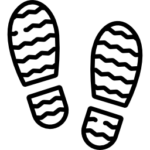
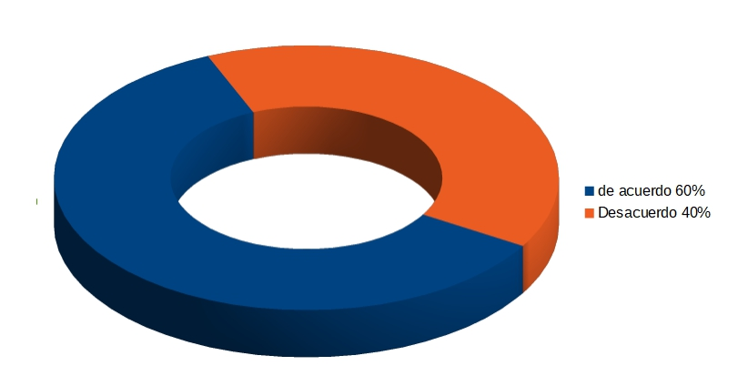
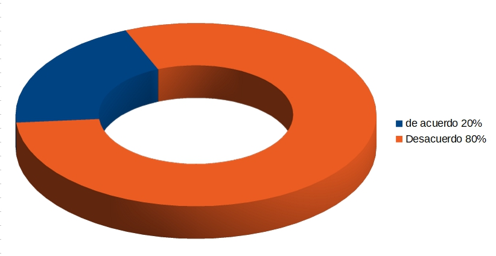
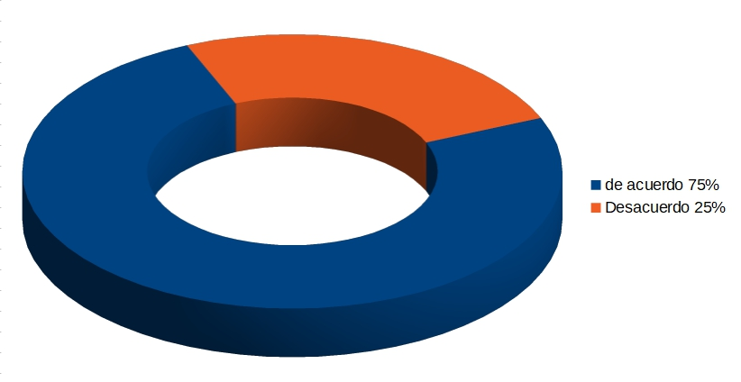

Igualdad de género
En el podcast del Taller de radio de Casa del Bicentenario Concordia nos informan sobre la igualdad de género en la sociedad.
En estas semanas estuvimos realizando encuestas simples y sencillas para tener un acercamiento sobre qué se sabe de igualdad de género y saber si nuestra sociedad conoce y comparte esta Ley.
Para las encuestas utilizamos diferentes formatos: facebook, wathsapp y territorial.
Entrevistamos a personas de entre 20 y 45 años en el barrio Sarmiento de nuestra ciudad de Concordia, donde se emplaza nuestro Punto Digital, de las cuales el 60% está de acuerdo con la ley y un 40% no.
En la famosa red social, personas de entre 16 y 50 años. De ellas el 20% está de acuerdo y el 80% no. Observamos que la mayoría de los que no están de acuerdo no supieron responder a la pregunta ¿por qué no está de acuerdo?, sólo respondieron: ”no, porque no”.
En grupos de Whatsapp con personas de entre 20 y 60 años, el 75% está de acuerdo con la ley y un 25% no. Observamos que la mayoría de los que optaron por el "no", son personas mayores de 35 años.
Como “conclusión” podemos decir que, estadísticamente hay consenso para la ley, y que de la mayoría de quienes se oponen no sabe por qué. Es decir, que la información que llega a las personas –según nuestro analisis- puede llegar incompleta, tergiversada, o tendenciosa; es decir, con intención de confundir o generar discordia fomentando el desconocimiento o estigmatización del tema que estamos tratando, con el fín de dividir nuestra sociedad y no de hacerla pensar de manera constructiva y así lograr una verdadera transformación para que la ley sea efectiva.
Con ésto en mente, hicimos un audio informando sobre el valor que tiene una ley que exprese la iguald entre las personas sin distinción.
En el podcast del Taller de radio de Casa del Bicentenario Concordia nos informan sobre la igualdad de género en la sociedad.